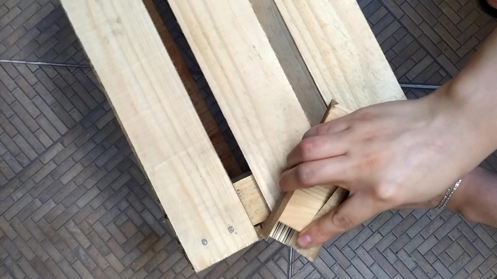
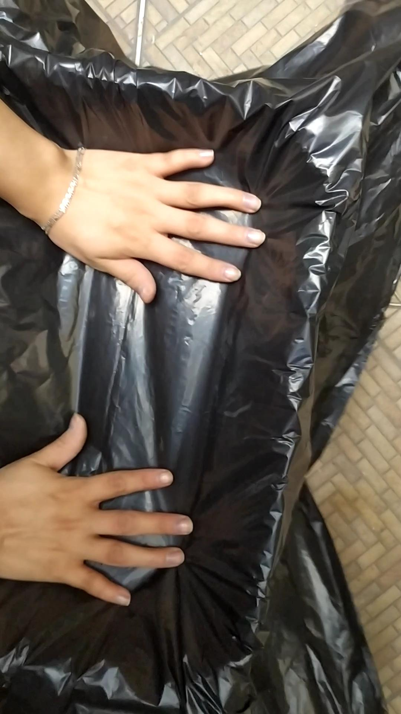
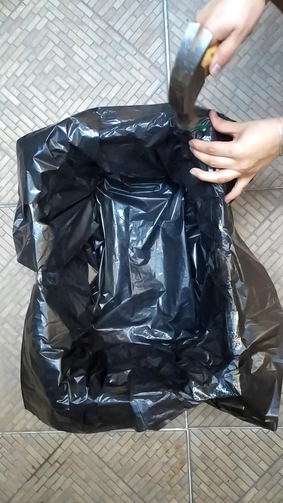
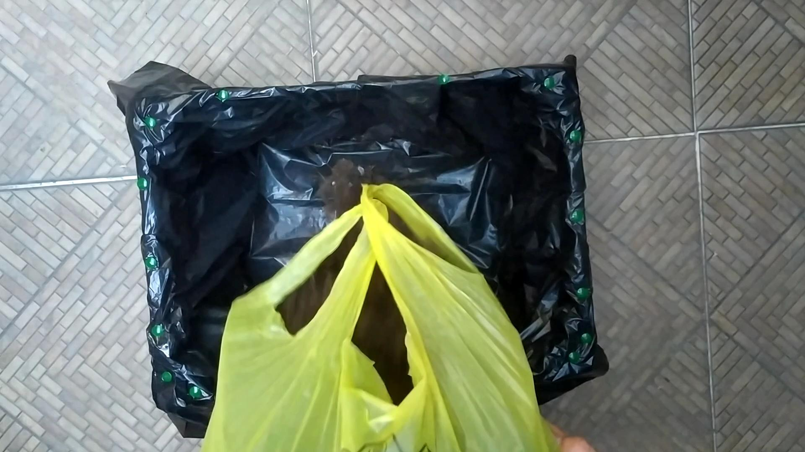
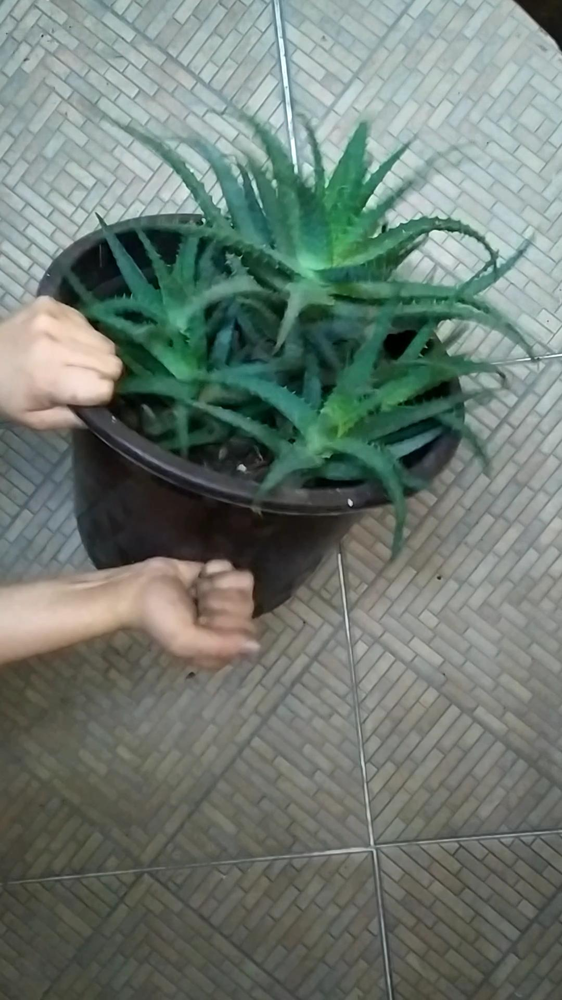
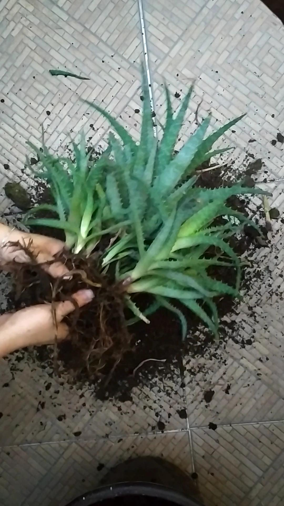
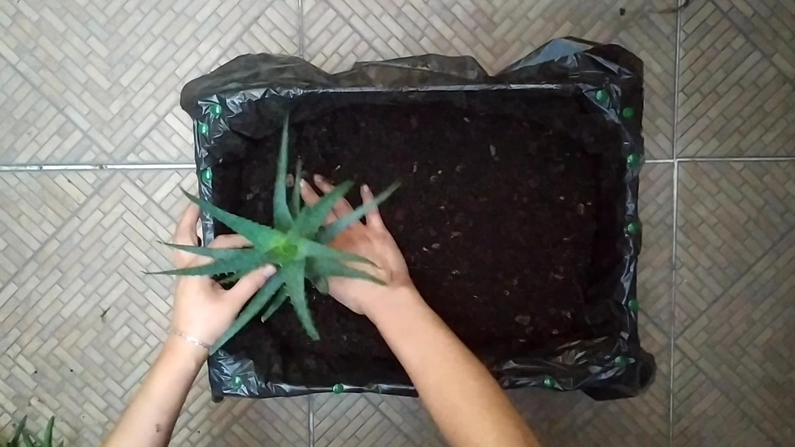
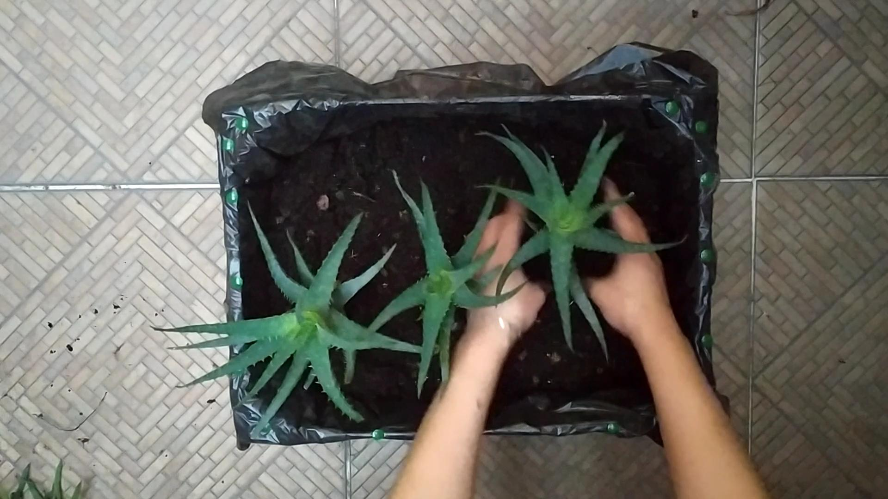
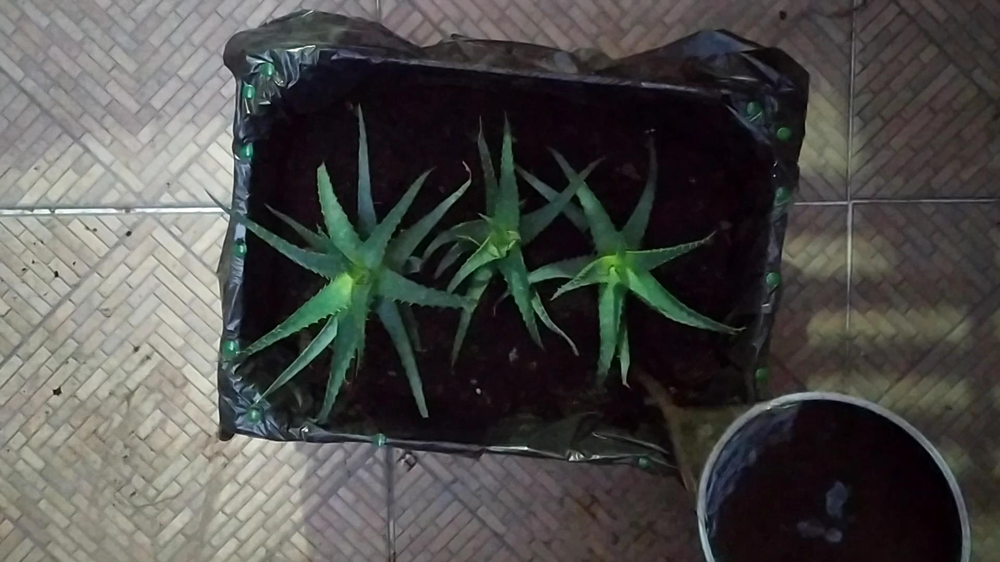

Cortamos un trozo de lija para madera y con ayuda del trozo de madera lijamos muy bien el huacal para evitar lastimarnos
Colocamos las bolsas en el fondo del huacal para evitar que la tierra se salga de este
Una vez tengamos listo eso, vamos a fijar las bolsas con tachuelas para que no se vayan a mover una vez coloquemos la tierra y haremos lo agujeros para que drene el agua cuidando poner los suficientes
Vertemos la tierra cuidando que no quede muy lleno el huacal para que podamos colocar las sábila correctamente
Para separar los esquejes, hay que dar pequeños golpes a la maceta para que se afloje la tierra y sea más fácil de sacar. Una vez que hayamos sacado la sábila dedemos de separar los esquejes con mucho cuidado de no dañar mucho las raíces.
 Una vez que tengamos los esquejes, los vamos a sembrar en el huacal haciendo espacio para las raíces, cubriendólas y haciendo un poco de presión
 Por último no te olvides de regarla y ¡listo! ya trasplantaste tu sábila
